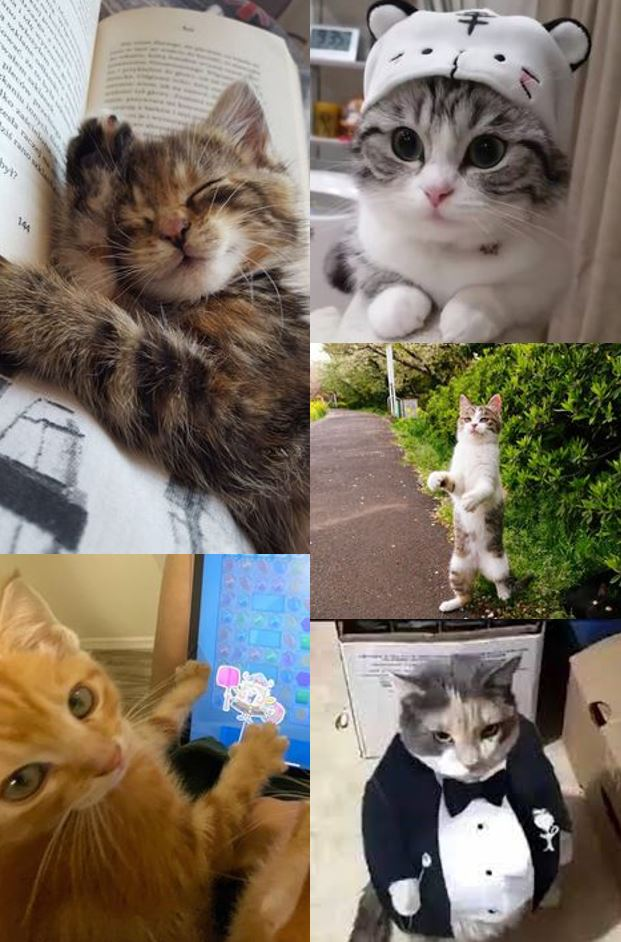

Location | Home | About Us | Menu


Currently only 5 of our cats are available for adoption, they have all the essential vaccinations and are excited and ready to play with their future owners!
- Bigotes (cat reading a book)
Bigotes is the embodiment of feline tranquility and leisure. With her plush, fluffy coat and a perpetually drowsy expression, she spends most of her days in a state of blissful slumber. Bigotes has perfected the art of finding the coziest spots in the house, be it a sun-drenched window sill, a soft pillow, or a warm lap.
- Kira (cat with big eyes)
Kira is a soft-furred, gentle soul with wide, expressive eyes. She's a bit timid and prefers quiet corners or hidden nooks. She warms up slowly to new people, but once she trusts you, she'll quietly approach and nuzzle your hand for a pet. Gracie has a special affinity for people who are feeling a bit down, often curling up next to them and offering quiet companionship.
- Maximus (standing cat)
Maximus has a curious nature and a thirst for adventure. He's often found exploring every nook and cranny of the cafe, or attempting daring jumps from one piece of furniture to another. He loves interactive play sessions and will eagerly chase after laser pointers and he usually stands to interact with people.
- Bulldozer (internet user cat)
She's a diva and she knows it. Always the center of attention, she struts around the cafe with confidence. Her favorite spot is the plush velvet cushion atop the highest shelf, where she can look down upon her kingdom. She enjoys being admired but on her terms; she'll let you pet her when she feels like it (she is the usual orange cat).
- Pelusa (Fat cat with tuxedo)
Sir Pelusa is the epitome of feline elegance and grace. With his sleek black coat and piercing yellow eyes, he carries himself with a dignified poise. He's a bit of an aristocat, preferring to spend his days lounging on the sunniest spot of the windowsill, observing the world with a wise and thoughtful gaze.